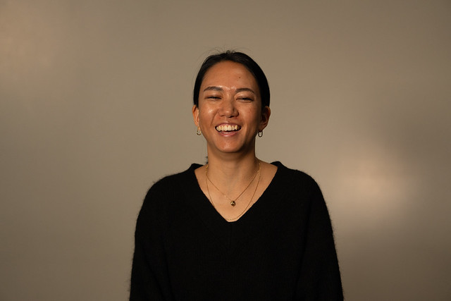
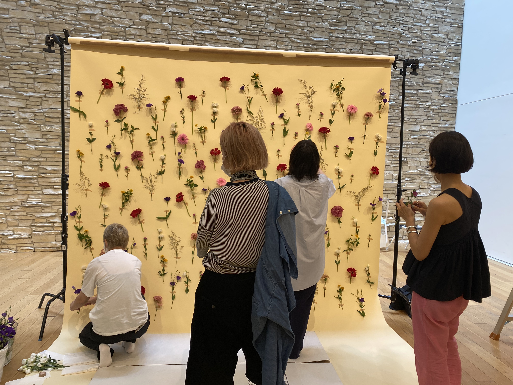
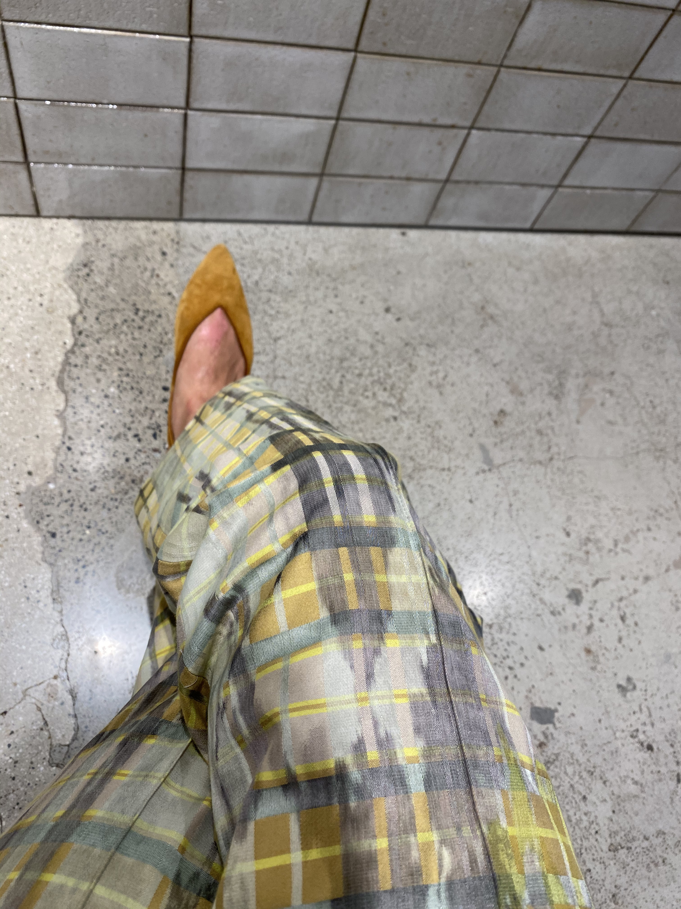
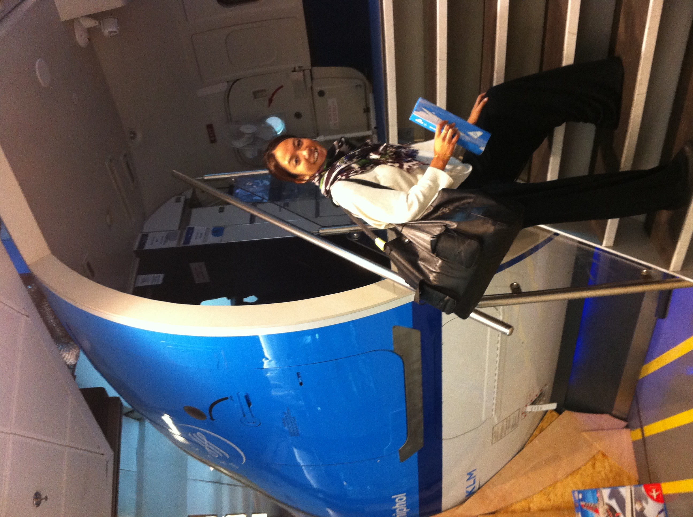
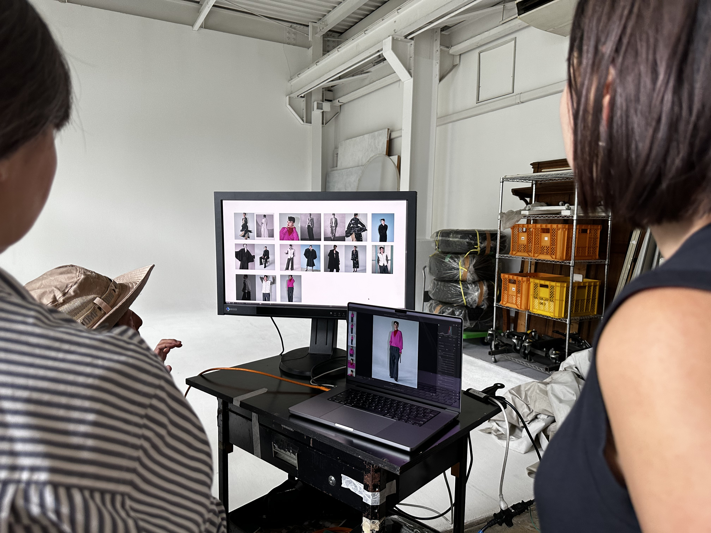

Works and Events
-

Tokyo
Flower
Shooting Visual Images: As part of PR tasks, I have also planned the shooting of seasonal visuals.
-

Tokyo
Yellow Pants
When considering visual design, the first things I think about are the brand's image and colors. This is because colors are crucial elements that make an impression on people.
-

Tokyo
Airplane
During buying trips abroad, I was primarily responsible for Europe. The opportunity to meet many creators had a significant impact on the aesthetics of my life.
-

Tokyo
London
After majoring in fashion marketing at an arts university in London UK, I am currently working in public relations for a fashion retail company in Japan.
-

Tokyo
Shooting
I have also been involved in planning the reuse of the shot visuals for websites.